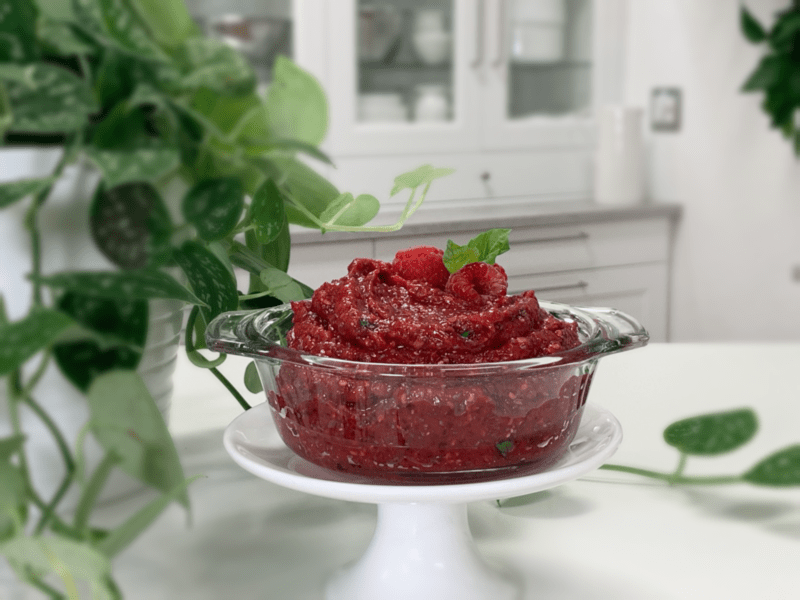
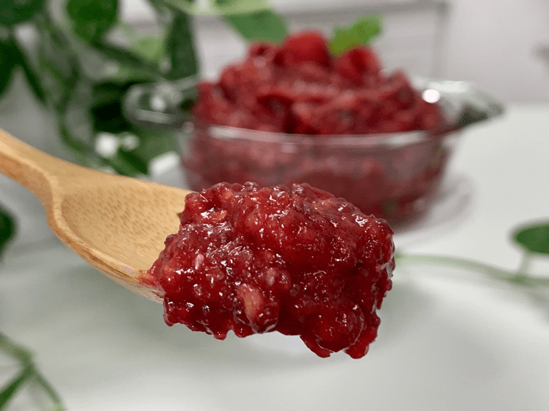
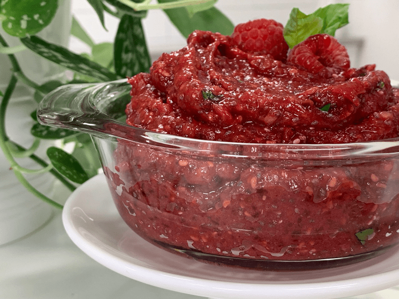

Raspberry Basil Date Jam
– raw, vegan, gluten-free, nut-free –
Spicy-perfumed basil and sweet-tart-ruby-red raspberries create quite an awakening for the good ole’ taste buds. If it sounds odd, but you love the two on their own… I ask that you trust me in giving this recipe a try. The act of blending them together will infuse the raspberries with basil, and the longer the jam is allowed to sit, the stronger the essence of basil will become.

If you choose to use frozen but thawed raspberries, either drain the liquid first or maybe increase the chia seeds by another tablespoon is the jam is too thin. Fresh or frozen, always aim for organic ones because berries are high on the list for absorbing pesticides. The role of the dates in this recipe is not only for a natural sweetness enhancer but also to give the jam an excellent structure. Figs or apricots might be a good substitute if you want to be adventurous.

Whenever I make raw jams, I always add in some chia seeds. They will absorb any loose juice in the jam keeping it tight in texture, and it will add in some fantastic nutrients. Chia can be omitted, but it is not advised. :)
The lemon juice adds a beautiful brightness, not a strong one, but enough to tame the tartness and sweetness of the recipe. It will also help the jam hold its vibrant color. And lastly, we have our fresh basil. I prefer to use the leaves only, but you can use the stems too. Just be careful because they are much more potent. As mincing action will cause a bruising in the flesh of the leaf… this is a good thing. This helps to release the oils within. Feel free to use less or use more… make those taste buds of your’s happy. Because if they are happy, and if you are happy, I am happy. :) Blessings!
 Ingredients:
Ingredients:
Yields 2 cups
- 1 1/2 cup (235 g) fresh organic, raspberries
- 1 cup packed, Medjool dates, pitted
- 2 Tbsp (24 g) chia seeds
- 2 tsp (6 g) fresh lemon juice
- 1 tsp (2 g) fresh minced basil
Preparation:
- If the dates are hard and dry, rehydrate them in enough warm water to cover them. Allow them to rest for 30+ minutes or until soft. Drain and discard the soak water once ready to use.
- In the food processor or blender, combine the raspberries, dates, chia seeds, lemon juice, and basil. Process until well blended. You can leave it as chunky as you like or blend until creamy (which is what I did).
- Store in the fridge for 1-2 weeks in an airtight container. Or it can be frozen for 1-3 months.
- I served this bread on my Raw Honey Oat Cinnamon Bread.

© AmieSue.com